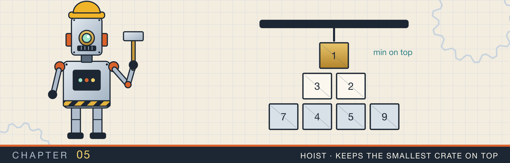
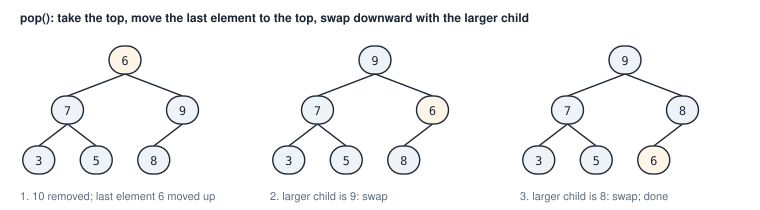
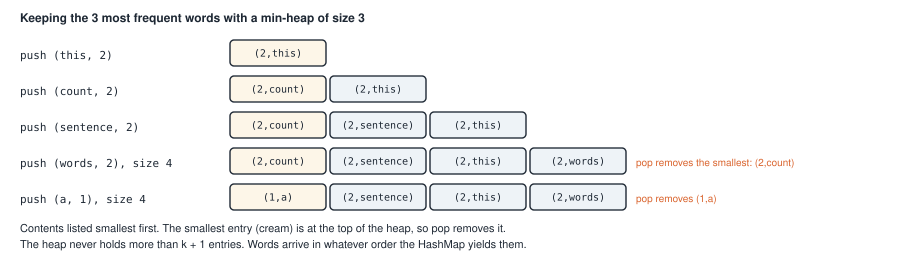
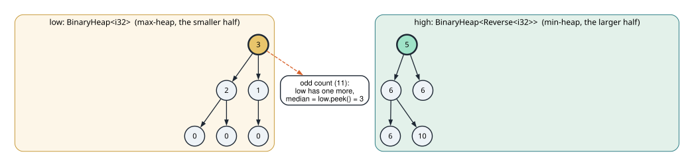

Heaps
This chapter covers
- Binary heap structure and how a complete tree maps onto a contiguous
Vec - How
pushandpoprestore the heap invariant in O(log n) steps - Rust’s
BinaryHeap, and converting it into a min-heap usingReverse - Lexicographical tuple ordering and prioritizing heap entries by
(count, value) - Finding the
kmost frequent items using both an unbounded max-heap and ak-bounded min-heap - Computing a running median over a data stream using two balanced heaps
Priority-driven workloads require continuous access to the extreme element of a dynamic multiset without paying the O(n) maintenance cost of keeping the entire collection sorted. A binary heap resolves this tradeoff by enforcing a partial ordering invariant over a complete binary tree packed contiguously in a vector, supporting O(1) extremum inspection and O(log n) insertions and deletions.
This priority-queue abstraction underpins top-k frequency selection, priority scheduling, and streaming order-statistic maintenance. The sections below formalize the implicit array representation, sift-up and sift-down invariant restoration, and Rust’s BinaryHeap API before developing three complete applications: unbounded top-k selection, k-bounded top-k word ranking, and dual-heap streaming median maintenance.
Four formal definitions establish the terminology:
- A binary tree is a hierarchical structure in which every node has at most two children (left and right); the unique node without a parent is the root.
- A max-heap is a complete binary tree satisfying the max-heap invariant: every parent key is greater than or equal to the keys of both children, placing the global maximum at the root.
- A min-heap inverts this ordering invariant so every parent key is less than or equal to its children’s keys, placing the global minimum at the root.
- The median of a finite multiset of real numbers is its middle element in sorted order when cardinality is odd, or the arithmetic mean of the two middle elements when cardinality is even.
5.1 A tree stored in a vector
Although conceptually a tree, a binary heap stores no child or parent pointers. Because a heap is always a complete binary tree (every level filled except possibly the last, which fills from left to right), its nodes pack densely into a Vec in level order: the root at index 0, its two children at indexes 1 and 2, their children at indexes 3 through 6, and so on. Figure 5.1 depicts a six-element max-heap alongside its backing vector.

Dense level-order packing replaces pointer chasing with index arithmetic. For any node at index i, its left child lies at 2i + 1, its right child at 2i + 2, and its parent at (i - 1) / 2 (using integer division). In Figure 5.1, node 7 at index 1 has children at indexes 3 and 4, holding 3 and 5.
The heap invariant constrains only parent-child relationships; sibling and cousin ordering is unconstrained (for example, 7 sits to the left of 8 in Figure 5.1). Maintaining this partial order is far cheaper than keeping the entire array sorted.
A complete binary tree of n nodes has height floor(log₂ n), so a heap of one million items is roughly 20 levels deep.
5.2 Adding and removing
5.2.1 Push
Inserting a new element appends it to the end of the vector, occupying the next free leaf slot on the bottom level. If the new value exceeds its parent, violating the max-heap invariant, it swaps upward with its parent repeatedly (sift-up) until either its parent is larger or it reaches the root. Figure 5.2 traces pushing 10.

Because each swap ascends one level in a tree of height O(log n), push completes in O(log n) worst-case time.
5.2.2 Pop
Removing the maximum element extracts the root at index 0. To preserve tree completeness, the final element of the vector moves into index 0 and the vector length shrinks by one. That displaced element typically violates the heap invariant, so it swaps downward with its larger child repeatedly (sift-down) until both children are smaller or it becomes a leaf. Figure 5.3 traces popping 10.

Swapping with the larger child is mandatory because the promoted child becomes the new parent of its sibling and must therefore be at least as large as that sibling. Like push, pop traverses at most the height of the tree in O(log n) time.
Inspecting the maximum element without removal (peek) reads index 0 directly in O(1) time.
5.3 Heaps in Rust
Rust’s standard library provides std::collections::BinaryHeap<T>, implemented as a max-heap over a Vec<T>. Its core API maps directly to the operations above:
| Method | What it does | Cost |
|---|---|---|
push(x) | adds x | O(log n) |
pop() | removes and returns the largest item, as an Option | O(log n) |
peek() | returns a reference to the largest item, as an Option | O(1) |
len() | the number of items | O(1) |
into_sorted_vec() | consumes the heap and returns its items in ascending order | O(n log n) |
BinaryHeap<T> orders elements via the Ord trait, which is implemented by integer types, String, and tuples of Ord elements.
5.3.1 How tuples compare
Rust compares tuples lexicographically from left to right: the first elements determine the ordering, and subsequent elements act as tie-breakers only when earlier elements are equal. Thus (3, 1) > (2, 9) because 3 > 2, while (3, 1) < (3, 2) because 1 < 2.
Placing the priority key first in a tuple lets a BinaryHeap order arbitrary payloads without defining a custom wrapper type: a heap of (count, value) pairs prioritizes by count and breaks ties by value.
5.3.2 A min-heap with Reverse
Rather than offering a separate min-heap type, the standard library provides the zero-cost wrapper std::cmp::Reverse<T>, whose Ord implementation inverts T’s ordering (Reverse(3) > Reverse(5) because 3 < 5). Consequently, BinaryHeap<Reverse<i32>> behaves as a min-heap keeping the smallest value at the root.
Callers wrap values on insertion (heap.push(Reverse(x))) and destructure the wrapper on extraction (if let Some(Reverse(x)) = heap.pop()).
With the implicit array layout and BinaryHeap interface established, the following three sections apply heaps to frequency ranking and streaming order statistics.
5.4 The k most frequent numbers
The problem. Given a slice of integers and a count k, return the k most frequently occurring numbers. For [1, 1, 1, 2, 2, 3] and k = 2, the result is 1 and 2.
The strategy. Tally frequencies in a HashMap, build a max-heap of (count, number) pairs, and pop k elements.
Listing 5.1 Top k with a full heap. src/problems/top_k_frequent.rs
//! Top K Frequent Elements.
//!
//! Count occurrences with a HashMap, then use a max-heap (`BinaryHeap`) to pull
//! out the top k elements. O(n log n) worst case; acceptable and readable.
use std::collections::{BinaryHeap, HashMap};
pub fn top_k_frequent(nums: &[i32], k: usize) -> Vec<i32> {
let mut counts: HashMap<i32, usize> = HashMap::with_capacity(nums.len());
for &num in nums.iter() {
*counts.entry(num).or_insert(0) += 1;
}
// BinaryHeap is a max-heap in Rust, so (count, num) keeps highest counts first.
let mut heap: BinaryHeap<(usize, i32)> = counts
.into_iter()
.map(|(num, count)| (count, num))
.collect();
let mut result = Vec::with_capacity(k);
while result.len() < k {
match heap.pop() {
Some((_, num)) => result.push(num),
None => break,
}
}
result
}
#[cfg(test)]
mod tests {
use super::*;
#[test]
fn returns_top_two() {
let nums = [1, 1, 1, 2, 2, 3];
let mut result = top_k_frequent(&nums, 2);
result.sort_unstable();
assert_eq!(result, vec![1, 2]);
}
#[test]
fn k_larger_than_unique_values_returns_all() {
let result = top_k_frequent(&[1, 2, 3], 10);
assert_eq!(result.len(), 3);
}
}The implementation proceeds in three stages:
*counts.entry(num).or_insert(0) += 1;increments the count fornum.entry(num)locates the bucket,or_insert(0)initializes absent keys to0and returns&mut usize, and*... += 1increments the counter in place.counts.into_iter().map(|(num, count)| (count, num)).collect()swaps each pair so the frequency leads, then constructs theBinaryHeapdirectly viacollect(using linear-time Floyd heapification).- The
whileloop extracts up tokelements, terminating early ifpop()yieldsNonewhen fewer thankdistinct values exist (covered by the second unit test).
For n input elements and u distinct values, counting takes O(n) time, heap construction takes O(u) time, and k pops take O(k log u) time.
In the first unit test, sorting the returned vector before comparison avoids brittleness: elements with tied frequencies can appear in different orders depending on the randomized HashMap seed.
5.5 The k most frequent words, with a heap of size k
Inserting every distinct element into the heap wastes memory when u is large and k is small (for example, finding the top 3 words across millions of distinct tokens). Bounding the heap to at most k + 1 entries reduces both memory and comparison work.
The strategy. Maintain a min-heap of (count, word) pairs. After pushing each entry, if the heap length exceeds k, pop the root. Because a min-heap places the smallest entry at the root, every eviction discards the least frequent candidate seen so far, guaranteeing that the k highest-frequency words remain (Figure 5.4).

The program tokenizes input text into normalized words, counts occurrences, and filters them through the bounded min-heap.
Listing 5.2 The function (lines 1 to 41). src/bin/top_k_frequent_words.rs
use std::{
cmp::Reverse as Rev,
collections::{BinaryHeap, HashMap},
};
/// Returns vec!<(word, frequency)>, most frequent first.
fn top_k_frequent(sentence: &str, k: usize) -> Vec<(String, u32)> {
// Split string by white spaces. Map it and trim any non alphanumeric characters. Finally,
// filter all the empty strings and map everything to lowercase characters.
let words: Vec<String> = sentence
.split_whitespace()
.map(|w| w.trim_matches(|c: char| !c.is_alphanumeric()))
.filter(|w| !w.is_empty())
.map(str::to_lowercase)
.collect();
// Build the frequency map...
let mut frequencies = HashMap::<&str, u32>::new();
for word in &words {
*frequencies
.entry(word.as_str())
.or_default() += 1;
}
// Keep a min heap of size k. Reverse flips the max heap, so the least
// frequent word sits on top and gets popped once we go over k.
let mut min_heap = BinaryHeap::<Rev<(u32, &str)>>::new();
for (&word, &frequency) in &frequencies {
min_heap.push(Rev((frequency, word)));
if min_heap.len() > k {
min_heap.pop();
}
}
// Ascending order of Reverse means most frequent first.
min_heap
.into_sorted_vec()
.into_iter()
.map(|Rev((frequency, word))| (word.to_string(), frequency))
.collect()
}Four design choices keep the implementation concise and allocation-lean:
- Tokenization: The iterator chain splits on whitespace, strips leading and trailing non-alphanumeric characters via
trim_matches(turning"sentence."into"sentence"), filters out empty remnants left by standalone punctuation, and lowercases each token by passingstr::to_lowercasedirectly tomap. - Zero-copy counting: The frequency map has type
HashMap<&str, u32>, borrowing slices fromwordsrather than cloning strings for every token occurrence.or_default()inserts0for absent keys. - Bounded min-heap: Aliasing
std::cmp::Reverse as Revkeeps the type concise. PushingRev((frequency, word))places the lowest-frequency pair at the root; wheneverheap.len() > k, a singlepop()evicts it. - Ordered output:
into_sorted_vec()drains the heap in ascending order ofRev, which corresponds to descending order of frequency. The finalmapunwraps eachRevand allocates an ownedStringfor only the survivingkwords, since the localwordsvector is dropped upon return.
Bounding the heap size to k + 1 caps each heap operation at O(log k), reducing heap work from O(u log u) to O(u log k) and heap memory from O(u) to O(k).
5.5.1 The complete program
Listing 5.3 The complete program, with its tests. src/bin/top_k_frequent_words.rs
use std::{
cmp::Reverse as Rev,
collections::{BinaryHeap, HashMap},
};
/// Returns vec!<(word, frequency)>, most frequent first.
fn top_k_frequent(sentence: &str, k: usize) -> Vec<(String, u32)> {
// Split string by white spaces. Map it and trim any non alphanumeric characters. Finally,
// filter all the empty strings and map everything to lowercase characters.
let words: Vec<String> = sentence
.split_whitespace()
.map(|w| w.trim_matches(|c: char| !c.is_alphanumeric()))
.filter(|w| !w.is_empty())
.map(str::to_lowercase)
.collect();
// Build the frequency map...
let mut frequencies = HashMap::<&str, u32>::new();
for word in &words {
*frequencies
.entry(word.as_str())
.or_default() += 1;
}
// Keep a min heap of size k. Reverse flips the max heap, so the least
// frequent word sits on top and gets popped once we go over k.
let mut min_heap = BinaryHeap::<Rev<(u32, &str)>>::new();
for (&word, &frequency) in &frequencies {
min_heap.push(Rev((frequency, word)));
if min_heap.len() > k {
min_heap.pop();
}
}
// Ascending order of Reverse means most frequent first.
min_heap
.into_sorted_vec()
.into_iter()
.map(|Rev((frequency, word))| (word.to_string(), frequency))
.collect()
}
fn main() {
let sentence = r"This is a short sentence. We'll count words.
Let us count words in this sentence
";
let top_k = top_k_frequent(sentence, 3);
println!("Top 3 frequency [(word, frequency)] : \n {:#?}", top_k);
}
#[cfg(test)]
mod tests {
use super::*;
#[test]
fn picks_most_frequent() {
let result = top_k_frequent("a a a b b c", 2);
assert_eq!(result, vec![("a".to_string(), 3), ("b".to_string(), 2)]);
}
#[test]
fn ignores_case_and_punctuation() {
let result = top_k_frequent("Hello, hello! HELLO world.", 1);
assert_eq!(result, vec![("hello".to_string(), 3)]);
}
#[test]
fn k_larger_than_word_count() {
assert_eq!(top_k_frequent("x y", 10).len(), 2);
}
#[test]
fn empty_input() {
assert!(top_k_frequent("", 3).is_empty());
}
}In main, the sample text uses a raw string literal (r"..."), which disables backslash escaping and spans multiple lines. The unit tests exercise standard ranking, case folding and punctuation stripping, k exceeding the vocabulary size, and empty input.
$ cargo run --bin top_k_frequent_words
Top 3 frequency [(word, frequency)] :
[
(
"words",
2,
),
(
"this",
2,
),
(
"sentence",
2,
),
]
Four words appear twice in the sample input ("this", "sentence", "count", and "words"), and "count" is evicted. When frequencies tie, lexicographical tuple comparison falls back to the word string; the min-heap therefore evicts the alphabetically smallest word, retaining the alphabetically latest words among ties.
TIP: To retain the alphabetically earliest words on frequency ties, push Rev((frequency, Reverse(word))). The inner Reverse inverts string ordering alone, causing the alphabetically latest word to sit at the min-heap root and be evicted first.
5.6 The median of a stream
The problem. Integers arrive incrementally in a stream. After each arrival, report the median of all values received so far.
The baseline approach. Maintaining a sorted Vec allows O(1) median reads, but inserting each new element into its sorted position shifts up to n elements, costing O(n) per arrival.
The two-heap approach. Partition the seen values across two complementary heaps (Figure 5.5):
low: a max-heap storing the smaller half of the values, exposing the largest element of the lower half at its root.high: a min-heap storing the larger half of the values, exposing the smallest element of the upper half at its root.
Two invariants hold after every insertion: every element in low is less than or equal to every element in high, and low.len() is either equal to high.len() or high.len() + 1. Under these invariants, the median is always available in O(1) at the roots: the root of low when the total count is odd, or the mean of both roots when the count is even.

low has six values and high five, so the median is 3, the top of low.5.6.1 Adding a number
Listing 5.4 The structure and add_num (lines 1 to 27). src/bin/median_finder.rs
use std::{cmp::Reverse, collections::BinaryHeap};
#[derive(Default)]
pub struct MedianFinder {
low: BinaryHeap<i32>,
high: BinaryHeap<Reverse<i32>>,
}
impl MedianFinder {
pub fn new() -> Self {
Self::default()
}
pub fn add_num(&mut self, num: i32) {
self.low.push(num);
if let Some(val) = self.low.pop() {
self.high.push(Reverse(val));
}
if self.high.len() > self.low.len()
&& let Some(Reverse(val)) = self.high.pop()
{
self.low.push(val);
}
}
// ...
}add_num preserves both invariants in three unconditional or size-checked heap moves without explicit value comparisons:
- Push the incoming value into
low. - Pop the maximum element from
lowand push it intohigh, restoring the ordering invariant so every element inhighis at least as large as every element remaining inlow. - If
high.len() > low.len(), pop the minimum element fromhighand push it back intolow, restoring the size balance invariant.
Tracing the first three arrivals (6, 10, and 2):
| Add | After step 1 (low) | After step 2 (low / high) | After step 3 (low / high) | Median |
|---|---|---|---|---|
| 6 | {6} | {} / {6} | {6} / {} | 6 |
| 10 | {6, 10} | {6} / {10} | {6} / {10} | (6 + 10) / 2 = 8 |
| 2 | {2, 6} | {2} / {6, 10} | {2, 6} / {10} | 6 |
Because each step performs a constant number of heap pushes and pops, add_num runs in O(log n) time.
5.6.2 Reading the median
Listing 5.5 find_median (lines 28 to 37).
impl MedianFinder {
// ...
pub fn find_median(&self) -> Option<f64> {
let max_low = *self.low.peek()?;
if self.low.len() > self.high.len() {
Some(max_low as f64)
} else {
let Reverse(min_high) = *self.high.peek()?;
Some((max_low as f64 + min_high as f64) / 2.0)
}
}
}*self.low.peek()? inspects the root of low. The ? operator works on Option identically to Result: if no values have been inserted yet, peek() yields None and find_median returns None immediately. The return type is Option<f64> because the mean of two integers can be fractional.
In the even-count branch, let Reverse(min_high) = *self.high.peek()?; unwraps the Reverse wrapper directly in the let pattern.
5.6.3 The complete program
Listing 5.6 The complete program, with its tests. src/bin/median_finder.rs
use std::{cmp::Reverse, collections::BinaryHeap};
#[derive(Default)]
pub struct MedianFinder {
low: BinaryHeap<i32>,
high: BinaryHeap<Reverse<i32>>,
}
impl MedianFinder {
pub fn new() -> Self {
Self::default()
}
pub fn add_num(&mut self, num: i32) {
self.low.push(num);
if let Some(val) = self.low.pop() {
self.high.push(Reverse(val));
}
if self.high.len() > self.low.len()
&& let Some(Reverse(val)) = self.high.pop()
{
self.low.push(val);
}
}
pub fn find_median(&self) -> Option<f64> {
let max_low = *self.low.peek()?;
if self.low.len() > self.high.len() {
Some(max_low as f64)
} else {
let Reverse(min_high) = *self.high.peek()?;
Some((max_low as f64 + min_high as f64) / 2.0)
}
}
}
const SAMPLE: [i32; 11] = [6, 10, 2, 6, 5, 0, 6, 3, 1, 0, 0];
fn main() {
let mut finder = MedianFinder::new();
for value in SAMPLE {
finder.add_num(value);
match finder.find_median() {
Some(median) => println!("after {value:>2}: median {median}"),
None => println!("after {value:>2}: no median"),
}
}
}
#[cfg(test)]
mod tests {
use super::*;
/// The median of a sorted slice, computed directly.
fn median_of_sorted(values: &[i32]) -> f64 {
let middle = values.len() / 2;
if values.len() % 2 == 1 {
values[middle] as f64
} else {
(values[middle - 1] as f64 + values[middle] as f64) / 2.0
}
}
#[test]
fn an_empty_finder_has_no_median() {
assert_eq!(MedianFinder::new().find_median(), None);
}
#[test]
fn one_value_is_the_median() {
let mut finder = MedianFinder::new();
finder.add_num(7);
assert_eq!(finder.find_median(), Some(7.0));
}
#[test]
fn an_even_count_averages_the_middle_two() {
let mut finder = MedianFinder::new();
finder.add_num(1);
finder.add_num(2);
assert_eq!(finder.find_median(), Some(1.5));
}
#[test]
fn three_values_are_ordered() {
let mut finder = MedianFinder::new();
for (value, median) in [1, 2, 3]
.into_iter()
.zip([1.0, 1.5, 2.0])
{
finder.add_num(value);
assert_eq!(finder.find_median(), Some(median));
}
}
#[test]
fn duplicates_are_kept() {
let mut finder = MedianFinder::new();
for value in [4, 4, 4, 4] {
finder.add_num(value);
}
assert_eq!(finder.find_median(), Some(4.0));
}
#[test]
fn the_stream_matches_a_sort_on_every_step() {
let mut finder = MedianFinder::new();
let mut seen = Vec::new();
for value in SAMPLE {
finder.add_num(value);
seen.push(value);
seen.sort_unstable();
assert_eq!(finder.find_median(), Some(median_of_sorted(&seen)));
}
}
#[test]
fn the_two_heaps_never_differ_by_more_than_one() {
let mut finder = MedianFinder::new();
for value in SAMPLE {
finder.add_num(value);
assert!(
finder
.low
.len()
.abs_diff(finder.high.len())
<= 1
);
}
}
}main feeds eleven sample integers into MedianFinder and prints the running median after each step:
$ cargo run --bin median_finder
after 6: median 6
after 10: median 8
after 2: median 6
after 6: median 6
after 5: median 6
after 0: median 5.5
after 6: median 6
after 3: median 5.5
after 1: median 5
after 0: median 4
after 0: median 3
The test the_stream_matches_a_sort_on_every_step validates the two-heap implementation against a simple reference routine: after each insertion, it sorts a copy of all values seen so far, computes the median via median_of_sorted, and asserts equality with find_median(). Verifying an optimized algorithm against a slower, obviously correct reference implementation is known as oracle testing, and reliably catches subtle invariant bugs missed by small hand-crafted examples.
The final test verifies the size-balance invariant directly, asserting that the two heap lengths differ by at most 1 after every insertion.
Summary
- A binary heap embeds a complete binary tree level by level in a contiguous
Vec, locating the children of indexiat2i + 1and2i + 2and its parent at(i - 1) / 2. - In a max-heap, every parent key dominates its children, exposing the global maximum at index
0for O(1)peek. pushappends to the tail and restores the invariant via sift-up;poppromotes the tail element to index0and restores the invariant via sift-down through the larger child. Both operations run in O(log n) worst-case time.- Rust’s
BinaryHeap<T>implements a max-heap; wrapping elements in the zero-coststd::cmp::Reverse<T>adapter yields a min-heap. - Lexicographical tuple ordering enables
(count, value)priority keys without custom comparator structs. - Bounding a min-heap to k + 1 entries during top-k selection reduces heap space from O(u) to O(k) and heap work from O(u log u) to O(u log k).
- Partitioning a stream across a lower max-heap (
low) and an upper min-heap (high) maintains the running median in O(log n) time per insertion and O(1) time per query.
Exercises
- Implement a standalone max-heap over
Vec<i32>supportingpush,pop, andpeekusing the index formulas from Section 5.1, and oracle-test it againstBinaryHeapon random sequences. - Modify
top_k_frequent_wordsto retain alphabetically earliest words on frequency ties using the nestedReversepattern from Section 5.5, and add a unit test confirming the tie-breaking order. - Add a
len(&self) -> usizemethod toMedianFinderreturning the total number of elements inserted. - Extend
MedianFinderto support a sliding window of the most recent 100 values by implementing lazy deletion (recording expired values in a hash map and discarding them when they surface at either heap root).